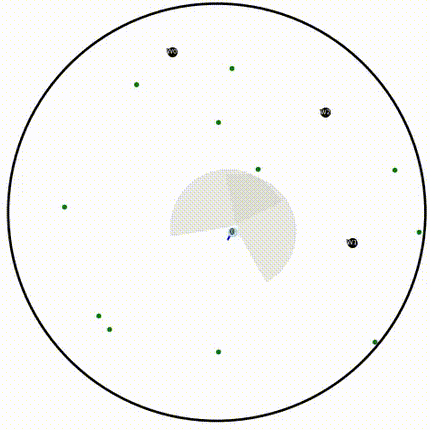
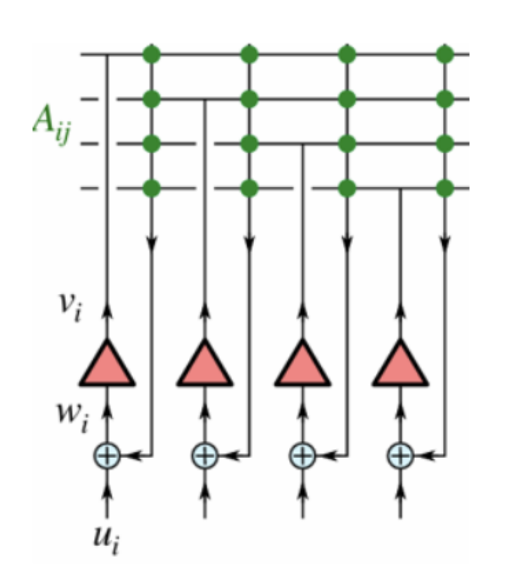
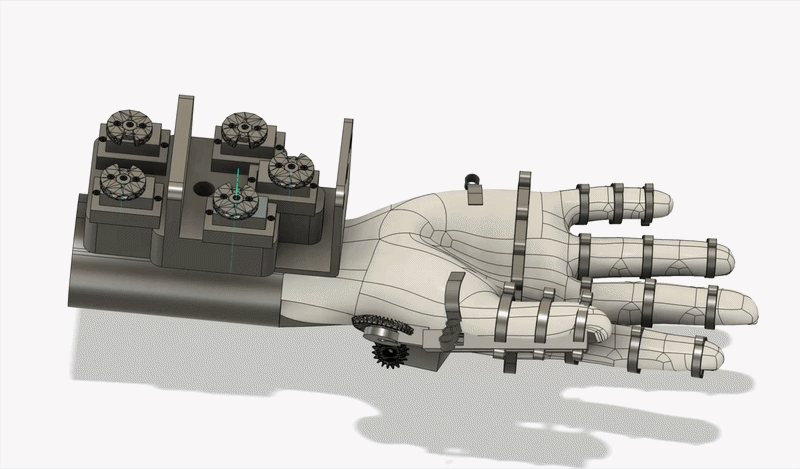
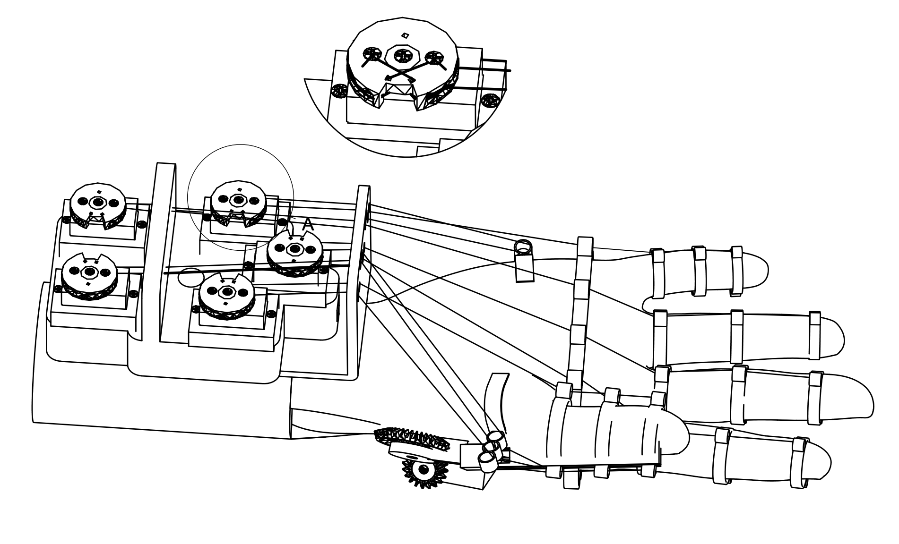

The brain remains our clearest example of intelligence that is adaptive, energy-efficient, and grounded in the world. As artificial systems become larger and more capable, understanding how biological systems learn from sparse, noisy information may offer both useful principles and useful limits. I’m interested not in copying the brain, but in treating it as evidence about what intelligence can be.
Brains, classrooms, and markets.
In a fast moving AI world, I keep coming back to these three domains: three places where learning happens, information moves, and choices made now, even small ones, could profoundly shape society's future.
I’m Raaghav, a recent Caltech graduate in computer science and economics. My work has moved between neural computation, tools for learning in the age of AI, and the systems that distribute resources such as attention and expertise. I’m curious about what these fields can teach one another, and about building things that make those connections useful.
Now
working on models for neuromorphic navigation
Classrooms are where AI’s promises and failures become human. These tools could widen access to explanation, feedback, and expertise; they could also weaken agency or deepen existing gaps. The urgent question is not simply how to put AI into education, but how to build it so that teachers gain leverage and students become more capable learners.
Markets, broadly understood, determine how scarce resources—money, attention, information, and expertise—move through society. AI is changing both what can be allocated and how quickly. I want to understand how economic and network design can direct those flows more effectively without losing sight of fairness, especially when automated systems increasingly mediate who gets what.
01
Selected work
show
A
Hunting under uncertainty
Recurrent reinforcement-learning agents for asking how ecological and energetic constraints shape zebrafish hunting.
The simulator models discrete bouts, biologically grounded sensing, and motor costs. The larger aim is a normative account of hunting as an energy–information trade-off.
Read the paper ↗
brainsinformation
B
Navigation with noisy sensors
Optimal-control and graph-kernel views of neuromorphic navigation, including why Gaussian-like place fields may be useful.
This work develops Laplacian formulations of Endotaxis, proves convergence properties, and compares the method with successor representations.
How Endotaxis represents a map
Point-cell input encodes the agent’s current node. It feeds recurrent map cells whose connections store graph adjacency; the resulting goal signal can then be greedily increased to choose each next step.

Goal signals on a ring
The Laplacian network produces a smooth goal gradient across the ring, while the adjacency network concentrates activity close to the goal. The broader gradient remains useful when activity is noisy.
Goal signals on a branched graph
The Laplacian signal changes more continuously with graph distance. Greedy ascent therefore follows a direction that more closely approximates a shortest path than the localized adjacency signal.
brainsoptimization
C
Teacher Copilot
A bilingual WhatsApp tool for lesson planning—and a network-design question about where unanswered teacher queries should go.
After visiting urban and rural schools, I explored graph matching and queue balancing as ways to distribute scarce expert attention more equitably.
educationnetworks
D
SENSE
A low-cost robotic glove that teaches sign language through guided motion and personalized hand-tracking feedback.
The system was granted U.S. Patent 11,919,159 and won Best in Show at Invention Convention Globals.
View the patent ↗

educationhardware
E
Arithmetic as programming
A Scratch-like interface and curriculum where students learn multi-digit arithmetic by building the algorithms themselves.
The material was piloted in schools in Columbus, Ohio and New Delhi, India as a creative complement to rote practice.
educationprogramming
F
Mobile tools for patient education
Eight mobile health apps designed to make patient education clearer and clinical workflows easier to navigate, reaching more than 2,000 downloads.
As lead mobile app developer at mHealth Wellness, LLC, I led development across the full eight-app portfolio.
educationmobile health
02
Questions in the margin
Move through the question space
Loading questions…Move or tap inside the triangle. Keyboard: arrows to explore; B, C, or M for a vertex.
Brains 33%
Classrooms 33%
Markets 34%
How should intelligent systems decide what information is worth seeking next?
At the intersection of all three
5 notes
03
Papers & manuscripts
- 2025 Dissecting Larval Zebrafish Hunting using Deep Reinforcement Learning Trained RNN Agents CCN 2026 Proceedings · NeurIPS AI4Science · spotlight
- 2025 Theoretical Limits of Noisy Neuromorphic Navigation manuscript in revision
- 2025 A Heat-Equation Inspired Neuromorphic Algorithm for Graph Navigation manuscript in revision
- 2024 Investigating Goal-Aligned and Empathetic Social Reasoning Strategies for Human-Like Social Intelligence in LLMs NeurIPS SoLaR workshop
- 2023 Multipurpose Robotic Glove Designed to Teach Sign Language through Guided Manual Motions U.S. Patent 11,919,159
04
A short version
I studied computer science and economics at Caltech and will join Stanford’s Computational and Mathematical Engineering PhD program in Fall 2027. Before Caltech, I studied at Yale.
I’ve worked in labs spanning neurotheory, neural circuits, cognition, machine learning, and language. Away from those, I collect and play flutes from around the world, get lost in nature and cities, and (try my best to) read.